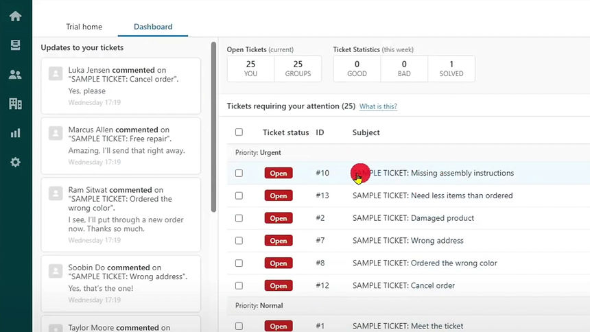
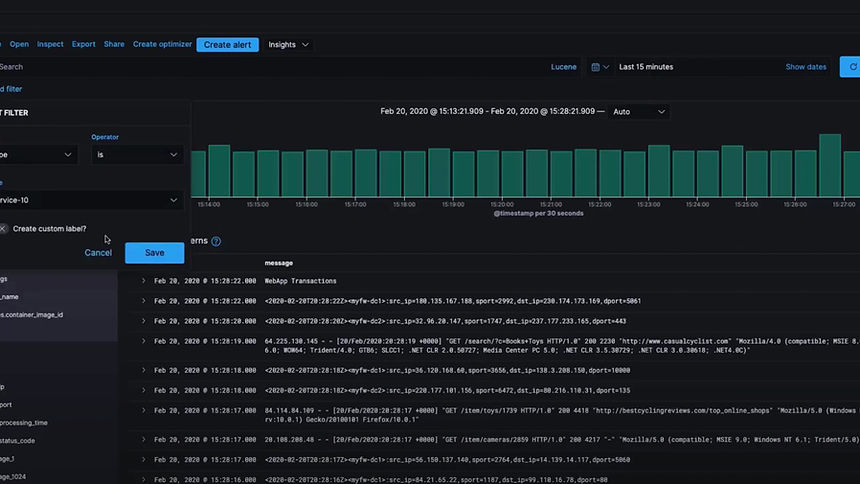
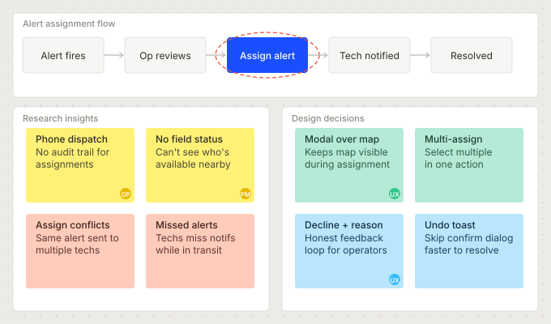

The product and the problem
LWF Corp builds AI-powered sensing infrastructure for water utilities. Their hardware detects leakages, unauthorized drilling, and water theft in real time, surfacing alerts on an operator dashboard the moment an anomaly is identified.
But detection was only half the story. Once an alert appeared on the map, operators had no structured way to act on it. Every assignment happened over the phone. No record, no status tracking, no way to know which technician was handling which alert, or where things stood. The product was generating reliable signals. The organization had no reliable way to act on them.
My Role
Research, UX flows, wireframing, visual design, design system, prototyping, and developer handoff across both web and mobile platforms
Team
1 UX Designer, 1 Product Manager, engineering team. Cross-functional collaboration from discovery through delivery.
Users
Corporate infrastructure operators and field technicians at water utility companies, working across web and mobile environments
Challenge
Design an assignment system that works for two different users: a desk-based operator managing many alerts at once, and a technician in the field with limited screen time
Two users, one workflow
The assignment flow had to work end-to-end across two completely different contexts: a desktop-first operator managing alerts from a control room, and a field technician responding from a mobile phone in the field. Any friction at the handoff point, where the operator assigns and the technician receives, would break the loop entirely.
The system had to create a single source of truth visible to both roles simultaneously. The operator needed confidence that an alert was assigned and being tracked. The technician needed just enough context to act, without being overwhelmed by information that only made sense at the operator's desk.
This meant two separate experiences built from a shared data model: the operator's web interface for assignment, prioritization, and oversight, and the technician's mobile app for receiving, updating, and closing alerts. Getting the information hierarchy right for each context was the central design challenge.

Two distinct users with conflicting needs
I conducted interviews and workflow observations with both operator and technician roles to understand where the phone-based process broke down. The failure points were different depending on who you asked, but they all traced back to the same root cause: no shared, persistent record of what was happening.
Think
Worried about losing track of which alerts have been handled. Constantly second-guessing whether a technician actually received the call. Wants to know status without making another call.
Do
Monitors the map dashboard for new alerts. Calls available technicians directly. Follows up by phone when she hasn't heard back. Keeps a personal notepad to track who's doing what.
Feel
Frustrated by the manual overhead. Anxious when multiple alerts are live simultaneously. Relieved when a technician confirms resolution, but unsatisfied that it still required a phone call.
Pain Points
Receives assignments over the phone with limited context. No way to review alert details before arriving on site. Has to call back to update status, which pulls him away from the work itself.
Goals
Get to the right location fast with enough information to act. Update status without interrupting fieldwork. Close the loop without a follow-up call when the job is done.
How other systems handle assignment
I analyzed three established tools that include alert or task assignment flows to identify patterns worth adopting and pitfalls to avoid. The focus: how each product handles the moment of assignment, and how visible the resulting status is afterward.
- Assignment is optional, which creates inconsistency across teams
- Cannot add comments during the assignment action itself
- No way to set deadlines within the assignment flow
- Status visibility is strong once assigned, but getting there is fragmented

- Assignment contained within the ticket context: logical and expected
- Assigning a ticket is optional, but the UI makes it easy to do right away
- Additional assignment features are clearly visible, not hidden behind secondary actions
- User-friendly enough that new users can navigate it without training

- Dedicated assignment screen provides good separation of concerns
- The interface becomes cluttered quickly when multiple assignments are in play
- The assign function is buried behind creating an alert, which hurts discoverability
- Steep learning curve for new users, not suited for time-pressured environments
Strengths to Adopt
Zendesk's in-context assignment keeps the action close to the object. Clear visual hierarchy for status post-assignment. All three show that deadline-setting within the assignment action is valued.
Weaknesses to Avoid
Optional assignment creates uneven adoption. Cluttered interfaces under load. Assignment buried behind multi-step flows. No inline comment capability during the assignment action.
Our Opportunity
A purpose-built assignment modal: inline priority, deadline, notes, and multi-assignee in a single action. Real-time status visible to both parties without requiring a follow-up call.
Risk to Mitigate
Over-engineering the assignment form. Field technicians need a minimal receiving experience: enough context to act, no more. A complex operator-side flow cannot translate into a complex mobile experience.
Direct alert assignment and tracking
The Direct Alert Assignment and Tracking System enables operators to assign alerts directly within the platform, eliminating phone calls from the workflow entirely. From the moment an alert is assigned, both parties can see the same status in real time: who is handling it, when it was assigned, and where it stands in the resolution process.
The goal was a system clear and simple enough for daily use under pressure: operators assign with full context, technicians receive with just enough, and everyone can see the status without making a call.
Operator web experience
The operator flow starts at the map, where alerts surface as they are detected. Every design decision in this flow was aimed at reducing the time between "alert appears" and "alert is assigned and tracked."
Map and alert overview
Alerts surface on the map the moment the sensors detect an anomaly. Each entry in the alert list shows the alert type, assigned technician, status badge, and timestamp at a glance. Operators can filter by alert type, severity, or status to focus on what matters most without scrolling through noise.


Alert detail and assign CTA
Clicking an alert expands the detail panel on the left: alert type, water meter ID, first and last seen timestamps, address, coordinates, elevation, and distance. Operators can also see open alerts nearby and the location's alert history, giving them context before assigning.


Assignment modal: filling the form
The assignment modal keeps the map visible behind it so operators don't lose spatial context. The form collects everything needed in one action: a title, one or more assignees, urgency level, due date, optional description, and an email notification toggle. The modal progresses from empty to filled as the operator works through it.


Confirmed: assignment live
Once the operator submits, the alert card updates immediately to show all assigned technicians as avatar chips. A toast notification confirms the assignment and offers an undo action for a short window, protecting against accidental submissions without adding a confirmation step to the happy path.

Technician mobile experience
The technician's experience is intentionally stripped down. In the field, context-switching is costly: every unnecessary tap or irrelevant piece of information adds friction when speed matters. The mobile app gives technicians exactly what they need to manage an alert from receipt to closure.
28/07/24 · 14:23
Full lifecycle in the field
Every stage of an alert, managed from one screen. No calls, no follow-ups.
-
1
Push notification
Technician receives a push with alert type, urgency, and deadline. One tap to open.
-
2
Review alert detail
Full context: location, distance, timestamps, and operator notes before accepting.
-
3
Accept or decline
Either action feeds back to the operator in real time. No silent gaps.
-
4
Update status on site
Status changes and notes sync instantly. Operator sees progress without calling.
-
5
Close with resolution report
Upload photos, add notes, and close the alert. The record is complete.
Building for consistency across contexts
A unified design system kept both the operator web platform and the technician mobile app visually coherent and maintainable. Shared components, consistent status indicators, and a common token set meant the team never had to make the same decision twice, and onboarding new engineers to either surface was significantly faster.
Collaboration and whiteboarding
Daily syncs with the UX designer and product manager kept the team aligned across the full lifecycle. We mapped user flows together in Miro before any pixels moved in Figma, working through the operator-to-technician handoff repeatedly until the logic was airtight. The whiteboard sessions surfaced edge cases that wireframes alone would have missed, particularly around multi-alert states and assignment conflicts.

What the system delivered
Following rollout with the initial operator cohort, the platform showed measurable improvements across the assignment lifecycle. Phone-based coordination dropped significantly, and the shared status model gave both operators and technicians a reliable source of truth for the first time.
What I learned
The hardest part of this project was not designing the assignment flow itself. It was resisting the urge to give technicians the same information density as operators. The first version of the mobile app was essentially a mobile-sized replica of the web dashboard, and technicians found it overwhelming. Stripping it back to the essential actions, and trusting that the shared data model would keep both parties in sync, was the key shift that made the system work.
I also underestimated how much the ability to decline an assignment would matter. Initially it felt like an edge case. In practice, it was the feature that gave operators accurate real-time status rather than a misleading "assigned" state. Building honest feedback into the system, rather than just success paths, made the whole workflow more trustworthy.
My work on LWF focused on transforming the alert assignment process to enhance efficiency and transparency. Initially, alerts appeared without any additional information. Now, users can click on an alert to access comprehensive information, assign it with priorities and deadlines, and track it all the way to resolution, without a single phone call.